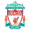
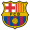

EREDMÉNYEK
| Szezon | Győztes | Eredmény | Második helyezett | Helyszín | ||
|---|---|---|---|---|---|---|
| Csapat | Nemzet | Csapat | Nemzet | |||
| 2020-21 | Chelsea |  Anglia Anglia |
1-0 | Manchester City | Anglia |
Porto, Portugália |
| 2019-20 | Bayern München |  Németország Németország |
1-0 | Paris Saint-Germain |  Franciaország Franciaország |
Lisszabon, Portugália |
| 2018-19 |  Liverpool | Anglia |
2-0 | Tottenham Hotspur | Anglia |
Madrid, Spanyolország |
| 2017-18 | Real Madrid |  Spanyolország Spanyolország |
3-1 | Liverpool | Anglia |
Kijev, Ukrajna |
| 2016-17 | Real Madrid | Spanyolország |
4-1 | Juventus |  Olaszország Olaszország |
Cardiff, Wales |
| 2015-16 | Real Madrid | Spanyolország |
1-1* | Atlético Madrid | Spanyolország |
Milánó, Olaszország |
| 2014-15 |  FC Barcelona | Spanyolország |
3-1 | Juventus | Olaszország |
Berlin, Németország |
| 2013-14 | Real Madrid | Spanyolország |
4-1+ | Atlético Madrid | Spanyolország |
Lisszabon, Portugália |
| 2012-13 | Bayern München | Németország |
2-1 | Borussia Dortmund | Németország |
London, Anglia |
| 2011-12 | Chelsea | Anglia |
1-1* | Bayern München | Németország |
München, Németország |